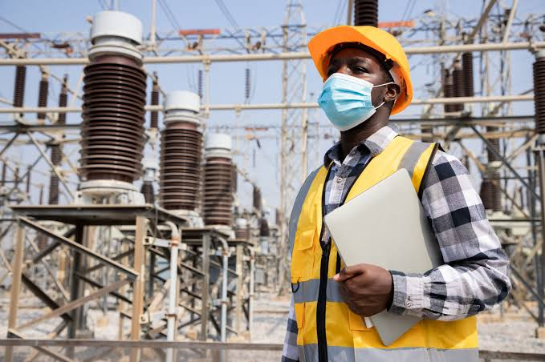

Engenharia Electrica
A engenharia Elétrica tem vindo a ganhar grande impacto no país. Pra os apaixonados pelo fenômenos elétricos esse é um curso que aconselharíamos a fazer.

Quais faculdades públicas oferecem esse curso em Moçambique?
Você pode fazer a engenharia elétrica nas seguintes faculdades públicas:
- UEM
- Unirovuma
- ISPS
Objectivos do Curso
O principal objectivo do curso de Engenharia Eléctrica é a formação de Engenheiros, técnicos de nível universitário com uma base científica sólida e com habilidades electrotecnicas, progresso e adaptação as imprevisíveis evoluções da ciência, da técnica e do meio socioeconómico.